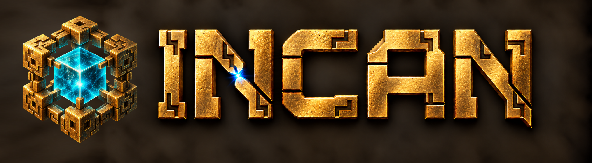
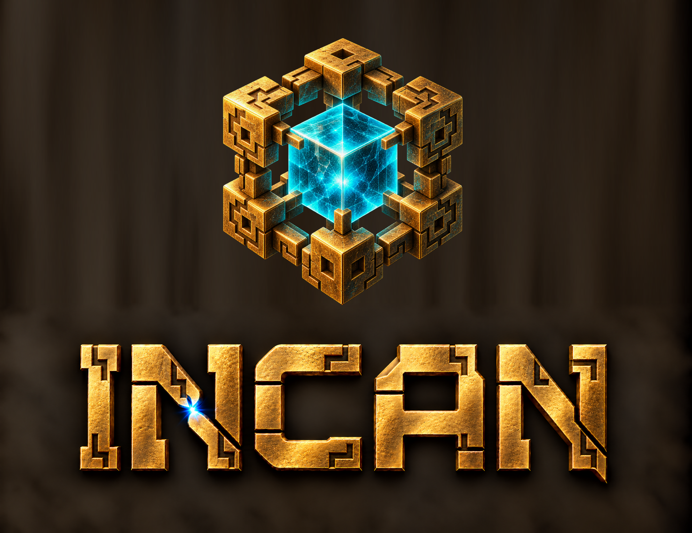
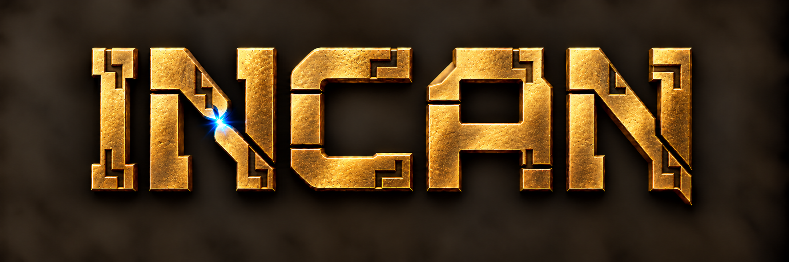

Matching the tesseract’s craftsmanship
The existing letter shapes, with richer gold, darker recesses and stepped carving. The original tesseract is unchanged. Tap an image for full resolution.
Side by side
Open full image ↗
Stacked
Open full image ↗
Wordmark
Open full image ↗